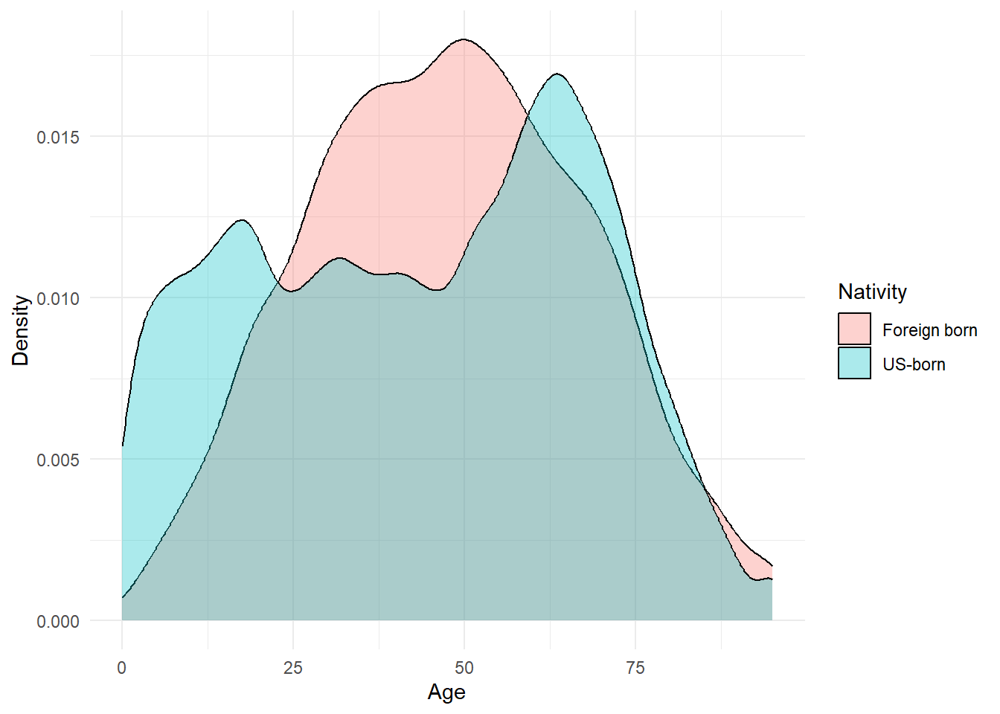
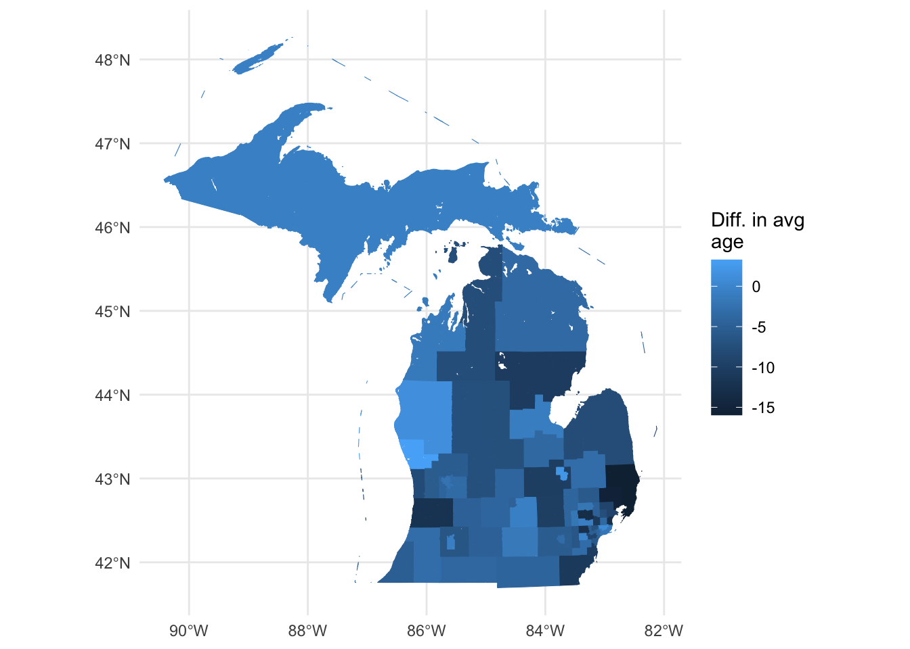
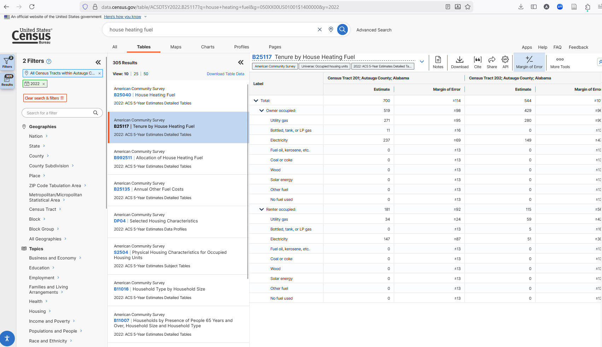
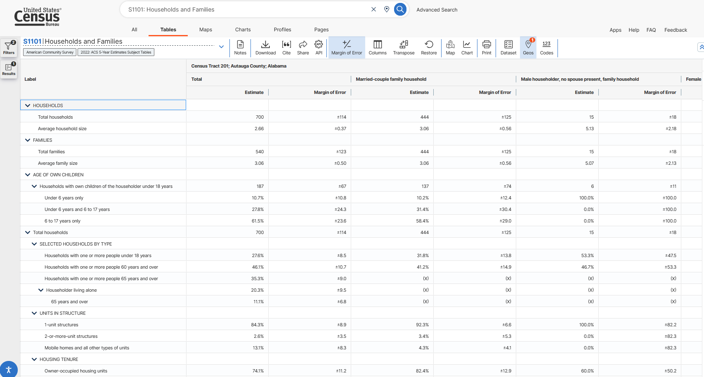

library(tidycensus)
library(tigris)
options(progress_enabled = FALSE)
individual1 = tidycensus::get_pums(variables = c('AGEP','NATIVITY','PUMA'),
state = 'MI',
puma = NULL, # will pull all PUMAs in state
year = 2022,
survey = 'acs1')
head(individual1)Data Hunting II
Reading
Guiding Questions
Where do we find (social science) data “in the wild”?
What challenges are presented in finding data?
How is US census microdata structured?
How is US census summary data structured?
How can we obtain and work with useful samples of US Census data.
Before we start:
You must obtain a US Census API key, which is free and fast. Go to https://api.census.gov/data/key_signup.html. Then, install the tidycensus package and, once loaded, run tidycensus::census_api_key('your census API key') once and only once. It will save the key on your computer and won’t expose it in your code.
Seeking out data
We start our investigation of a social science question by asking “what sort of data can we bring to bear on this question”. Sometimes, this is obvious: if we’re interested in food deserts, we’d want some data on market locations, and some data on poverty in different areas, and we’d be able to see how many poor neighborhoods have (or do not have) access to fresh fruits and vegetables.
Some questions are not as up-front and require thinking about what data we’ll need or, more likely, what data is available. A few points to consider when thinking about a question and data.
- Consider what your “dream data” might look like.
You likely won’t find “dream data”, but at least you’ll define what you’re looking for. Maybe you’re interested in household energy consumption by household wealth (“do rich people use more electricity?”). Your dream data would be a dataset of households with reported energy consumption (maybe multiple observations over time of the same household), and with household income attached. You aren’t going to find that (if you do, email me right away!), but maybe if you start there, you can find something close. Say, monthly energy consumption aggregated to zip code, to which you can attach zip code level average income. Starting with “dream data” helps you figure out what features of data you’re interested in.
- Consider proxies
Maybe you won’t ever see energy consumption and income, but maybe you can find something that tends to vary along with income. Say, education or house size? Of course, the latter presents an issue for energy consumption (larger houses use more electricity), but maybe education can be a reasonable proxy for income. The zipcode level income in (1) would be a good proxy for a household’s income, even if you don’t have data on each household’s income.
- Subsets
While dream data (or reasonable proxies) may not exist for the entire country, is it possible to find something close in a local region? Does your data exist for one (large) state? Or even a county? An electric utility? In a survey? You may have to trade off data coverage for data usefulness. That’s OK, you just want to think about the “external validity” of your analysis – if you are studying just one place (e.g. “Michigan”) do you expect the same thing to hold in, say, California or Florida?
Temporal and geospatial granularity of data
Data is often limited in some way for privacy. That is, you should never be able to identify a single person in publicly available data, even if you know something about them. While data users like us would prefer to have very exact physical locations (imagine you’d like to see proximity to a greenspace for people with different income levels), privacy concerns mean we often only get to see less granular geographic location (like “city” or “county”).
Temporal granularity refers to time, the number of times we observe the same unit of observation, or the number of times we see any data, or how detailed the recording is of when things occur in time.
Panel Data
When we see the same unit of observation at different points in time (yearly, decadally, etc.), and when we see more than one unit of observation, then we say we have “panel data”. Panel data is very useful because we can look at changes over time for multiple units of observation, and we can look at the ways in which different variables change over time, and whether they change together.
For example, if we see unemployment rate and average education level every year for every county in Michigan, we’d say “we have a panel of counties with yearly data.” A panel dataset might be individuals as well, as long as we observe the same individual multiple times. If we saw that counties with increasing unemployment rates over time also tend to have decreasing average educational attainment, we will have learned somehting about the relationship (correlation) between the two, even if different counties have very different “usual” levels of unemployment.
Repeated cross-section
If we have data where the same variable is measured at different points in time, but measured against a different sample from the same population at each time period, we call that a “repeated cross-section.” It’s not as useful as a panel, but it’s better than nothing. Later, we’ll work with the US Energy Information Administration’s RECS (Residential Energy Consumption Survey), which is taken every 10 years and surveys a sample of around 10,000 homes in the US. Since it’s different homes sampled every 10 years, it’s a “repeated cross-section”.
Cross section and time series
A “cross section” is just a sample at one point in time (or taken over an interval of time, but without reporting the time). A time series dataset is one where a single unit of observation is followed over multiple points in time. Both of these are less useful for analysis.
Micro-data vs. summary data
Microdata is data where each observation is an instance of something recorded in the data. For contrast, we may have data on shipments of dishwashers from an appliance distributor, aggregated to the month level. Maybe we see them split out by state of destination, or by customer (total sales units to customer X in month Y). This would be summary or aggregated data. Microdata in the same context would be sale-level records, one observation for each sale, including customer location and date. Of course, this could have varying levels of detail – exact date vs. month of sale, price vs. just quantity, etc. For privacy reasons, or sheer data size, we don’t often see microdata.
Below, we’ll see both US Census summary table data, and we’ll learn about US census microdata (PUMA).
US Census
There are many sources for data that we can use for social science research and analytics. Today’s class will focus on US Census data, but I’ll include some other common sources at the end. For the US Census, we’ll look at:
US Census Datasets
Decennial census (every 10 years, 100% of population)
- Public Use Microdata
- Summary tables
American Community Survey (every year, 1% of population)
- Public Use Microdata
- Summary tables
American Housing Survey
Commute flows
Many more available here, though most do not have packaged API’s like ACS/Census.
Summary tables, cross-tabs, and individual data
Most US Census data is used via summary tables, which report a single value for each spatial area (like a census tract). Average income by census tract, average age by county, etc. We often also use cross-tabs of summary files, which subdivides by two or more variables. For instance, summary data may be reported for average income by age by census tract, or average age by nationality of birth by county. The US census makes a lot of cross-tabs, but not every single combination you could imagine. Plus, they are limited by privacy, so they can’t subdivide to the point you can identify a person. For instance, “average income by exact age by number of kids by profession by time living in current house by census block” would absolutely identify an individual’s current income as they’d be the only one being averaged.
The US decennial census and the yearly 5-year and 1-year American Community Survery (ACS) report summary tables with very rich cross-tabs.
Individual microdata allows for generating any cross-tab as individual data would contain all responses to all questions for the respondent. The US Census makes the ACS sample individual answers available to the public, along with the survey and codebook for translating responses. Of course, for privacy reasons, the geographic location provided with the individual data is limited. The finest area reported is the “PUMA” (Public Use Microdata Area), each of which contains at least 100,000 individuals. For example, the City of Detroit is comprised of 5 PUMAs.
US Census Spatial definitions
- Region
- Division
- Metropolitain Statistical Area (MSA)
- Combined Statistical Areas (CSA)
- State
- County
- PUMA
- Tract (1,600 households, 4,000 people on average)
- Blockgroup
- Block
- Many more (tribal areas, zip code ZCTAs, etc.)
You can explore all of the census geographies with the TIGER browser (make sure you turn on roads to get a sense of where you’re looking).
GEOID
The US Census has standardized a way of referring to each spatial unit (“geography”) in the census data. The GEOID can be of different lengths depending on what it’s pointing to, and when census geographies are perfectly nested, then the GEOID tells you which smaller units belong to which bigger units (tracts in county). The GEOID for smaller areas (tracts and below) changes when the boundaries get redrawn each decade, so you’ll often see GEOID10 or GEOID20 (for 2010 or 2020 censuses).
- First 2 are state
- Next 3 are county FIPS
- Next 6 are Tract
- Next 1 is blockgroup
- Last 4 are block (first block digit includes blockgroup)
The GEOID for the census block containing the Abbot in downtown East Lansing is:
\[\underbrace{26}_{\text{state}}\overbrace{065}^{\text{county}}\underbrace{004100}_{\text{tract}}\overbrace{3009}^{\text{block}}\]
26 is the state, 065 is Ingham County, 004100 is the tract, 3 is the blockgroup and 009 is the block (3009 would be the complete block number). To give you an idea of scale, the Abbot is the entire census block.
Different data is reported at different levels. Most basic decennial data is available at the block level (population, race, housing units), but ACS measures like average income stop at the blockgroup, and “cross-tabs” are not always available at blockgroup or even sometimes tract level. For example, average income for females over 85 is a “cross-tab” (reported in a “summary table” since it’s summarizing a population within a geography), but since there aren’t very many 85 year olds in any block (40 houses), it’s unlikely that the cross-tab can be reported.
Since there are many census surveys (decennial and ACS) over time, we can obtain the data for different years. Decennial census access goes back to the 1940’s and earlier, while ACS starts in the early 2000’s.
Rule of thumb: you want your census data to be at the same spatial and temporal granularity of your other data. That is, if you have a count of “number of markets with fresh veggies” at the tract level from some source, you probably want to have things like “average income” reported at the tract level as well. If you only have the measure for one year, you probably just want the nearest year reported in the census. If you have it for multiple years, then you probably want the census product years that correspond.
Obtaining Census Data
Using the tidycensus package, we can easily obtain US census data. First, you must obtain a US Census API key, which is free and fast. Go to https://api.census.gov/data/key_signup.html. Then, install the tidycensus package and, once loaded, run tidycensus::census_api_key('your census API key') once and only once. It will save the key on your computer and won’t expose it in your code. Handy!
Tidycensus can obtain data from both PUMS (individual) and from the summary tables for ACS and decennial censuses. The interface makes it easy to import data directly into your R session. The hard part, though, is knowing what to ask for.
Individual (PUMS) data
You can load into R the complete list of variables available for PUMS with the instructions here. PUMS reports both household-level responses and individuals. Individuals are “nested” in households, and each individual gets a person weight (PWGTP) while each household gets its own household weight (WGTP) – these tell you how many real people (or households) each record stands for. You can easily move between individual and household by using dplyr::summarize after grouping by the household identifier.
My preferred way of finding the right PUMA variable is to use the browser at https://data.census.gov/app/mdat/ACSPUMS1Y2024. Choose a year and a sample to see the data browser. Clicking on a topic drop-down shows you the codebook for the variable – the translation between the (compact) data returned and it’s meaning. Click on AGEP and note that values of 0 mean “under 1 year” and values 1-99 indicate age of the individual (top-coded at 99 so there are no 101 year olds reported; they just get “99”).
If you select a few then click on “see data” it will give you totals for the whole US, and try to show you cross-tabs generated using this data. However, if you record the variable names, we can import the individual observations using tidycensus::get_pums(). We’ll include the PUMA variable since this tells us which PUMA the person lives in. PUMAs are not uniquely numbered to the state, so if we’re doing anything interstate, we’ll need to unite the ST and PUMA columns. tidycensus takes both state and the PUMA number as an input.
# A tibble: 6 × 8
SERIALNO SPORDER WGTP PWGTP AGEP PUMA ST NATIVITY
<chr> <dbl> <dbl> <dbl> <dbl> <chr> <chr> <chr>
1 2022GQ0000003 1 0 11 22 02600 26 1
2 2022GQ0000042 1 0 46 18 00801 26 1
3 2022GQ0000160 1 0 3 46 02800 26 1
4 2022GQ0000162 1 0 12 62 01801 26 1
5 2022GQ0000215 1 0 73 86 01002 26 1
6 2022GQ0000244 1 0 24 71 02600 26 1 The SERIALNO column shows the household identifier, and SPORDER contains the individual identifier (so a unique person is SERIALNO - SPORDER).
We can immediately make our own visualization: how about the distribution of age by nativity?
ggplot(individual1 %>%
dplyr::mutate(NATIVITY = case_when(NATIVITY==1 ~ 'US-born',
NATIVITY==2 ~ 'Foreign born')),
aes(x = AGEP, fill = as.factor(NATIVITY))) +
geom_density(alpha = .33) +
labs(x = "Age", y = 'Density', fill = 'Nativity') +
theme_minimal()
We can do this for any variable we find on the data browser. One cheat above: I plotted the raw PUMS records and ignored the person weights (PWGTP), so that’s the distribution of the sample, not of Michigan. We’ll deal with weights at the end of class.
PUMS maps
Summarizing and showing on a map is easy. First, we need to obtain the PUMA map for the year that corresponds to our data (they are updated every 10 years). Then, we need to group_by and summarize the individual data so that each PUMS has one value for each variable.
I’m interested in seeing where in MI there’s a big gap between native-born age and foreign-born age. I’ll first pull the PUMAS using tigris::pumas(), then merge it to my data.
MIpums = tigris::pumas(state = 'MI', year = 2022, progress_bar = FALSE) %>%
tigris::erase_water(area_threshold = .95) # fixes the Great Lakes boundary issue (erases the largest 1-.95=5% of lakes)
MIpums.merge = MIpums %>%
dplyr::select(PUMACE20, NAMELSAD20) %>% # just keeping useful columns from tigris file
left_join(individual1 %>% group_by(PUMA) %>%
dplyr::summarize(avgAge.USborn = mean(AGEP[NATIVITY==1], na.rm=T),
avgAge.foreignborn = mean(AGEP[NATIVITY==2], na.rm=T),
diffAvgAge = avgAge.USborn - avgAge.foreignborn),
by = c('PUMACE20' = 'PUMA'))
head(MIpums.merge)Simple feature collection with 6 features and 5 fields
Geometry type: GEOMETRYCOLLECTION
Dimension: XY
Bounding box: xmin: -90.41839 ymin: 42.48914 xmax: -82.12297 ymax: 48.26268
Geodetic CRS: NAD83
PUMACE20 NAMELSAD20
1 00100 Western Upper Peninsula PUMA
2 00200 Eastern Upper Peninsula PUMA
3 00300 Northeast Lower Peninsula PUMA
4 01300 Iosco, Gladwin, Roscommon, Ogemaw & Arenac Counties PUMA
5 01600 Tuscola, Sanilac & Huron Counties PUMA
6 03100 St. Clair County PUMA
avgAge.USborn avgAge.foreignborn diffAvgAge geometry
1 45.75952 46.40385 -0.6443257 GEOMETRYCOLLECTION (MULTILI...
2 48.40300 49.14545 -0.7424574 GEOMETRYCOLLECTION (MULTILI...
3 49.64950 53.15909 -3.5095911 GEOMETRYCOLLECTION (MULTILI...
4 51.36252 61.96000 -10.5974773 GEOMETRYCOLLECTION (MULTILI...
5 47.07148 54.91176 -7.8402866 GEOMETRYCOLLECTION (MULTILI...
6 45.29903 61.25806 -15.9590354 GEOMETRYCOLLECTION (MULTILI...Now, we can plot this (or use mapview to explore interactively)
ggplot(MIpums.merge, aes(fill = diffAvgAge, col = diffAvgAge)) + geom_sf() +
theme_minimal() +
scale_color_continuous(guide = 'none') +
labs(fill = 'Diff. in avg\nage')
You now have a wealth of socio-economic microdata at your fingertips, all linked to a relatively granular spatial location.
Decennial/ACS Summary tables
Summary tables from decennial census or the ACS contain finer geographies (usually down to census block), but aggregate rather than giving individual observations. Many cross-tabs are calculated for each geography, so finding the right one can be tricky. Some tables report averages or shares (percent renters, average income) while some report total counts (count of renters, number of people earning between $25-35k).
While tidycensus provides a function to import the whole list of all variables, we can also use the data.census.gov website. We are looking for tables, so click on “explore tables”.
First thing we want to do is set our geography level (e.g. block, block-group, tract, county, etc.) so that we are searching for data that exists at the level we want. No sense in searching for something you want at the county level to find out it’s only available at the state level! On the left side under “geography” click on the level you want (say, “census tract”) then choose a random state and tract – you’re only using this to find the variable’s code, not to actually retrieve data. I always use the first county in Alabama just because it’s small-ish so it doesn’t take long to load up.
I’m also going to select the year 2022 by scrolling down and checking the 2022 box, just so we’re only looking at ACS census data (in a decennial year like 2020, the decennial tables show up mixed in with the ACS ones). Not all variables exist for all years (especially over long periods of time). I’m going to search “house heating fuel” to find the type of heating fuel used. I’ll select “B25117”, which is the variable ID number for “House Heating Fuel” data.
This is what you’ll see at this point – note the location and geography filter.

Let’s take a look at the columns that show up under “B25117”. For this (and any table starting with “B”), there are two columns for each census tract header. The first is the “Estimate” and the second is the “Margin of Error”. The MOE is there because this is a sample (ACS is 1% of the population each year). Decennial censuses are counts, so there is no MOE. Other tables will have more columns (cross-tabs or expressed as percent vs. counts). We’ll get there in a second.
Just “B25117” isn’t quite enough. You see that there are multiple numbers in each column – the “Total:”, then “Utility gas” then “Bottled, tank, or LP gas” etc. There’s also two groupings: “Owner occupied” and “Renter occupied”. To import this data to R, we have to identify which of these (possibly many) numbers we want for every tract.
Each of the rows is numbered, so if we want the total number of households in a tract that are counted for this variable, then our target is “B25117_001”. If we want the total number of owner-occupied households using electric heating, we want row 5. If we want the same for renter-occupied, we want 15. And if we want to calculate, say, the shares of households using electric heat among renter-occupied households, we’d want row 15 divided by row 12. When there are blank lines, you do not count those lines.
The “Total” (row 1) will be same for almost all variables we could choose in the same year, geography, and survey (2022 ACS) because the universe of households surveyed is the same for all the variables. Some tables will have different universes (“all non-family households”, for example), so we’ll have to pay attention to the table description. If we go to B11016 “Household Type by Household Size” and look at the same tract, we’ll see the same estimate, but other rows for that variable will be different.
Let’s pull data for the first county in Alabama (FIPS = 01001) so we can convince ourselves that data.gov and tidycensus yield the same data. We’ll calculate the fraction of households that heat with “Bottled, tank, or LP gas”, separately for owners and for renters. We’ll note that we need the following:
- Total owner-occupied (row 2)
- Total owner-occupied using Bottled, tank or LP gas (row 4)
- Total renter-occupied (row 12)
- Total renter-occupied using Bottled, tank or LP gas (row 14)
AL.heat = get_acs(geography = 'tract',
variables = c('OwnerOccupied_total' = 'B25117_002',
'OwnerOccupied_LPgas' = 'B25117_004',
'RenterOccupied_total' = 'B25117_012',
'RenterOccupied_LPgas' = 'B25117_014'),
year = 2022, survey = 'acs5',
output = 'wide', # in "wide" format
state = '01', county = '001',
geometry = TRUE, progress_bar = FALSE) %>%
dplyr::arrange(GEOID) # so 201 is on top
head(AL.heat)Simple feature collection with 6 features and 10 fields
Geometry type: MULTIPOLYGON
Dimension: XY
Bounding box: xmin: -86.51029 ymin: 32.424 xmax: -86.41135 ymax: 32.50516
Geodetic CRS: NAD83
GEOID NAME OwnerOccupied_totalE
1 01001020100 Census Tract 201; Autauga County; Alabama 519
2 01001020200 Census Tract 202; Autauga County; Alabama 429
3 01001020300 Census Tract 203; Autauga County; Alabama 912
4 01001020400 Census Tract 204; Autauga County; Alabama 1306
5 01001020501 Census Tract 205.01; Autauga County; Alabama 971
6 01001020502 Census Tract 205.02; Autauga County; Alabama 697
OwnerOccupied_totalM OwnerOccupied_LPgasE OwnerOccupied_LPgasM
1 98 11 16
2 96 0 13
3 229 28 33
4 182 0 13
5 242 0 13
6 200 40 60
RenterOccupied_totalE RenterOccupied_totalM RenterOccupied_LPgasE
1 181 92 0
2 115 56 5
3 393 114 38
4 360 154 0
5 812 211 0
6 630 183 0
RenterOccupied_LPgasM geometry
1 13 MULTIPOLYGON (((-86.5091 32...
2 10 MULTIPOLYGON (((-86.48122 3...
3 52 MULTIPOLYGON (((-86.47087 3...
4 13 MULTIPOLYGON (((-86.45394 3...
5 13 MULTIPOLYGON (((-86.43816 3...
6 13 MULTIPOLYGON (((-86.4335 32...The variables argument takes named vectors, and tidycensus uses the name you give it for each variable for the column it outputs (appending “E” and “M” for Estimate and MOE).
That first line of the results shows 519 owner-occupied households total, same as on data.gov. We have both the Estimate and the Margin of Error, so we want to drop those. Then we want to calculate our shares.
AL.heat.proc = AL.heat %>%
dplyr::select(!ends_with('M')) %>%
dplyr::mutate(OwnerShareLPgas = OwnerOccupied_LPgasE/OwnerOccupied_totalE,
RenterShareLPgas = RenterOccupied_LPgasE/RenterOccupied_totalE) %>%
dplyr::select(GEOID, NAME, ends_with('gas'))
head(AL.heat.proc)Simple feature collection with 6 features and 4 fields
Geometry type: MULTIPOLYGON
Dimension: XY
Bounding box: xmin: -86.51029 ymin: 32.424 xmax: -86.41135 ymax: 32.50516
Geodetic CRS: NAD83
GEOID NAME OwnerShareLPgas
1 01001020100 Census Tract 201; Autauga County; Alabama 0.02119461
2 01001020200 Census Tract 202; Autauga County; Alabama 0.00000000
3 01001020300 Census Tract 203; Autauga County; Alabama 0.03070175
4 01001020400 Census Tract 204; Autauga County; Alabama 0.00000000
5 01001020501 Census Tract 205.01; Autauga County; Alabama 0.00000000
6 01001020502 Census Tract 205.02; Autauga County; Alabama 0.05738881
RenterShareLPgas geometry
1 0.00000000 MULTIPOLYGON (((-86.5091 32...
2 0.04347826 MULTIPOLYGON (((-86.48122 3...
3 0.09669211 MULTIPOLYGON (((-86.47087 3...
4 0.00000000 MULTIPOLYGON (((-86.45394 3...
5 0.00000000 MULTIPOLYGON (((-86.43816 3...
6 0.00000000 MULTIPOLYGON (((-86.4335 32...The second lines uses a tidyselect shortcut to select anything that does NOT (!) end with “M” (so that we lose the “margin of error” columns). Similarly, the last line selects the GEOID, NAME and the two new variables I just created.
We can grab the census tract polygons for Alabama and plot these. Or – as we already did above – we can pass geometry = TRUE to our get_acs call, and we’ll get the tigris polygons already attached for this county.
Not all tables have just the “Estimate” and “Margin of Error” column. Some, like “S1101” (Households and Families) have cross-tabs across the columns (AND cross-tabs down the rows!). That’s super helpful if we have a very narrowly defined population we’re interested in, but also makes things harder. Let’s find the S1101 data and look at it’s table layout:
knitr::include_graphics(here('images','census2.png'))
Now on the right we see sets of columns with different cross-tabs. Total is still there (note that it’s still 700, just as before), but now there’s a pair of columns for “Married-couple family household” and “Male householder, no spouse present, family household” and more. Let’s look at “Female householder, no spouse present, family household” and find out what fraction of these households own their own home.
We’ll need the following
- Total households (row 1, since we don’t count blanks)
- Owner-occupied households (row 18, since we don’t count blanks but we do count X’s – an “(X)” just means the cell doesn’t apply to that column, and it still takes up a row)
- Note that this is already in percentage, so we don’t really need the Total households.
But we’ll need them specifically for the “Female householder, no spouse present, family household” set of columns. That is the fourth set of columns, so we append it with “C04”
AL.fam = get_acs(geography = 'tract',
variables = c('TotalHouseholds' = 'S1101_C04_001',
'PctFemaleNoSpouseFamily_OwnerOccupied' = 'S1101_C04_018'),
year = 2022, survey = 'acs5',
output = 'wide', # in "wide" format
state = '01', county = '001',
geometry = FALSE) %>%
dplyr::arrange(GEOID) %>% # comes in out of order for some reason
dplyr::select(!ends_with('M'))
head(AL.fam)# A tibble: 6 × 4
GEOID NAME TotalHouseholdsE PctFemaleNoSpouseFam…¹
<chr> <chr> <dbl> <dbl>
1 01001020100 Census Tract 201; Autauga… 81 59.3
2 01001020200 Census Tract 202; Autauga… 131 74.8
3 01001020300 Census Tract 203; Autauga… 290 84.8
4 01001020400 Census Tract 204; Autauga… 159 74.2
5 01001020501 Census Tract 205.01; Auta… 196 20.4
6 01001020502 Census Tract 205.02; Auta… 165 38.2
# ℹ abbreviated name: ¹PctFemaleNoSpouseFamily_OwnerOccupiedEHere, we see we get the expected number – 59.3% owner-occupied. Now we can confidently change the state and county to whatever we are interested in, add other variables, and make new calculations.
Not all tables have the same cross-tab-by-column paradigm. The Data Profiles (DP) tables have the letter “E” for estimate, “PE” for percent, and “M” and “PM” for the margin of error. All tables have some sort of structure we can derive from data.gov, but we might have to look closesly at that structure.
Luckily, there is a full catalog of the structure of data.gov that can be found here: https://api.census.gov/data/2022/acs/acs5.html (this is for ACS 5-year in 2022, change the address for other years and surveys). Clicking on “variables” shows all available variables for that survery and year. It’s a little tricky to use but knowing what you know now, you can parse it out if necessary. You can see the different tables on the left and click on “variables” to see the full structure. The 2nd column shows first what is being reported (estimate, margin of error, percent), then !! designates a category header. After the next !! (if any), the table reports the category’s total, and after the next !! it reports the subcategory’s name. You can think of it as “out of the 3rd total, how many are the 4th?”
NoteTRY IT
Part A:
Let’s take a look at Ingham Co. (FIPS 26065), which is where we’re located. We’ll use the ACS 5-year survey for 2021, specifically the DP04 data profiles. Here are the DP table structures. At the “county” level, let’s get a count of:
- Total housing units
- Total housing units that are mobile homes
Write code that uses get_acs to pull those totals in count (estimate) form (not in percent). The variable ID should be DP04 followed by the proper row. Use the DP table structure to figure out what to append to DP04_.
Part B1:
Let’s ask for the same data, but do it with PUMS data. Ingham County contains two PUMAs – MI 01802 and MI 01801 (each state repeats numbering, so state + PUMA number is unique). For the two Ingham County PUMAs, pull the same data as in Part A: total housing units and total housing units that are mobile homes. Do it for the 2021 5-year data.
This is a little tricky because there isn’t a “do you live in a mobile home” question. But there is a question about the type of structure you live in, and one of the codes for that variable is….mobile home. See https://api.census.gov/data/2021/acs/acs1.html, select the “Public Use Microdata Sample” variables, and search for “structure”. Use that table to tell which variables to ask for (or how to work with the variables it has available).
From your data, how many individuals live in a mobile home? Remember, each row is an individual, and each unique SERIALNO is a household.
Part B2:
Let’s compare the PUMS counts to the ACS 5-year count. Your goal here is to see if we can get (close to) ACS totals using the PUMS sample. The ACS reports households, so we’ll have to get to household counts rather than individuals.
Part B1 should result in 12,439 observations with 6,388 unique values (you can use length(unique(Data$SERIALNO)) to see how many unique household SERIALNOs there are). We know that the structure type is the same for all invididuals in a household. And our Part A data showed number of housing units – vacant ones included, so don’t expect the two to line up exactly. So, we want to “collapse” our data by keeping only the unique values of SERIALNO and our housing variable. We are also going to keep the WGTP weight column. This column tells us how much we need to weight each household observation in order to “blow up” to the total estimate.
The column(s) we don’t need are SPORDER (that’s what shows the individual responses, but the household responses are all the same within household), and we don’t need the individual weight PWGTP. We can use the dplyr::distinct() function, which returns the unique values of whatever data you give it, so select() first then pipe to distinct(). Hint: you should have 6,388 rows when done. Each row will represent a household PUMS observation in one of the two PUMAs in Ingham county.
Weights: to “blow up” from the PUMS (sample) to the totals reported in the ACS, we need simply multiply by the weight WGTP. It’s pretty easy to do in a summarize call. Since you have both PUMAs in Ingham Co. you need only add them all together (once properly weighted).
Calculate the PUMS-based total number of households and total number of households living in mobile homes. Compare them to the numbers from Part A, as reported by the ACS. Do they match? Are they kinda close?
Other data sources
Census data products are core resources in socio-economic research. But they are not the only games in town, of course. In this section, we discuss other data sources, and briefly introduce the use of API’s for accessing many other data sources.
MSU-available data
- MSU Data Librarian start page
- MSU-subscribed datasets, may of which (but not all) are available to undergraduates
- Dewey Data Catalog
- Clearinghouse of usually-expensive data across 25+ providers. Some examples:
- NatureQuant has urban heat indexes
- RentHub has rental price data over time (microdata from listings)
- ClimateCheck climate risk data
- SafeGraph cellphone point locations
- Much more
- Requires extracting data – no straightforward access protocol
- Clearinghouse of usually-expensive data across 25+ providers. Some examples:
Other common sources
- Published journal articles in many journals are required to post code and data for replication (unless private or confidential data is used).
- In most cases, you can find the data and code in the journal’s repository
- So if you don’t know where to find data, but you find research that covers what you’re intersted in, you can simply pull data from their repository.
- Government open data portals
- Many state and local governments have open data portals with maps you can view and explore (see Michigan’s here: https://gis-michigan.opendata.arcgis.com).
- Many municipalities have something similar as well.
- However, many times they do not have the “download all data” ability turned on. Fear not - see below for instructions to extract from ArcGIS online hosted maps (a large majority of hosted maps).
- Google has a dataset search page
Extracting from ArcGIS Online
A large number of municipalities share their geospatial open data using ArcGIS maps. Problem is, they often don’t let you download (you can view and make little story maps, but can’t bring it into R to merge, etc.).
Here’s how most (but not all) ArcGIS-hosted spatial data can be obtained.
Install the
arcgisandarcgislayerspackages.Find the map you want to extract. I’m going to go to the MI open data link at https://gis-michigan.opendata.arcgis.com and pull up a map of Michigan EGLE (Environment, Great Lakes, and Energy) conservation easements see here.
Click on the map to highlight some feature – it doesn’t matter which, we just want our browser to query the map.
Turn on your browser’s Web Inspector pane (on Safari, it’s under “Developer”. On Firefox, it’s CTRL+SHIFT+I)
Click on the “network” tab
In the “filter” or “filter URL” bar, type “query”. This will highlight one or more entries where the “feature server” or “map server” was queried (just one if you only clicked once). It may just say “query”.
Click on one and look at the URL or URL summary. You’re looking for an address that starts with the URL of the mapping site (for mine, gisagoegle.state.mi.us), then followed by
/arcgis/restand eventually ending with/featureserverormapserverfollowed by a number. We want to copy everything up to and including the number afterfeatureserverormapserver. In this example, the full address we want to copy is:https://gisagoegle.state.mi.us/arcgis/rest/services/EGLE/WrdOpenData/MapServer/1/.Using
arcgislayer:
library(arcgislayers)
library(sf)
MI.easements.url = 'https://gisagoegle.state.mi.us/arcgis/rest/services/EGLE/WrdOpenData/MapServer/1/'
MI.easements = arc_open(MI.easements.url) %>%
arc_select()
head(MI.easements)Simple feature collection with 6 features and 9 fields
Geometry type: POLYGON
Dimension: XY
Bounding box: xmin: 711852.2 ymin: 448737.2 xmax: 715152 ymax: 461692.5
Projected CRS: NAD83 / Michigan Oblique Mercator
OBJECTID Id Acres MappingDate FileNumber County
1 1 1 0.5833177 2008-03-03 19:00:00 06-01-0018 Alcona
2 2 2 0.6375753 2008-03-03 19:00:00 03-01-0030 Alcona
3 3 3 5.1003871 2008-03-03 19:00:00 03-01-0030 Alcona
4 4 4 0.3197049 2008-03-03 19:00:00 03-01-0030 Alcona
5 5 5 0.2803897 2008-03-03 19:00:00 03-01-0030 Alcona
6 6 6 0.2680268 2008-03-03 19:00:00 03-01-0030 Alcona
Township Shape.STArea() Shape.STLength()
1 Greenbush Township 2360.613 198.6734
2 Harrisville Township 2580.186 222.0932
3 Harrisville Township 20640.617 1520.8078
4 Harrisville Township 1293.805 233.1256
5 Harrisville Township 1134.702 165.4281
6 Harrisville Township 1084.670 151.5164
geometry
1 POLYGON ((711852.9 448749.2...
2 POLYGON ((714978.6 461686, ...
3 POLYGON ((715115.4 461691.2...
4 POLYGON ((715141.1 461692.1...
5 POLYGON ((715078.4 461676.5...
6 POLYGON ((715083.2 461611.3...And now it’s our own layer in R and we can merge, summarize, and analyze to our hearts content.
Note: if you are having trouble installing arcgislayers on a Windows machine (and your error is asking about an installation of Rust), then use the following to install from already-compiled binaries: install.packages("arcgis", repos = c("https://r-arcgis.r-universe.dev", "https://cloud.r-project.org"), type = 'win.binary')